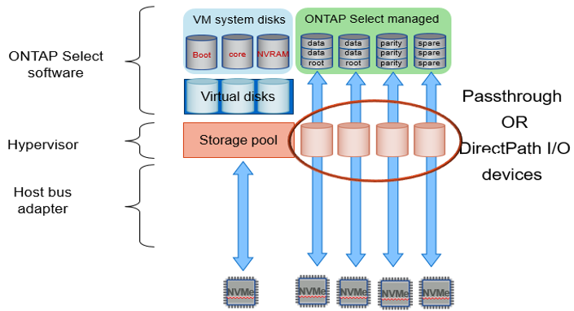

Richiedi modifiche alla documentazione
Richiedi modifiche alla documentazione Modifica questa pagina
Modifica questa pagina Scopri come collaborare
Scopri come collaborareServizi RAID software per lo storage collegato in locale
Collaboratori
Il RAID software è un livello di astrazione RAID implementato all’interno dello stack software ONTAP. Fornisce le stesse funzionalità del livello RAID all’interno di una piattaforma ONTAP tradizionale come FAS. Il livello RAID esegue i calcoli di parità dei dischi e fornisce protezione da guasti a singoli dischi all’interno di un nodo ONTAP Select.
Indipendentemente dalle configurazioni RAID hardware, ONTAP Select offre anche un’opzione RAID software. Un controller RAID hardware potrebbe non essere disponibile o essere indesiderabile in alcuni ambienti, ad esempio quando ONTAP Select viene implementato su un hardware commodity con fattore di forma ridotto. Software RAID espande le opzioni di implementazione disponibili per includere tali ambienti. Per abilitare il RAID software nel tuo ambiente, ecco alcuni punti da ricordare:
-
È disponibile con una licenza Premium o Premium XL.
-
Supporta solo dischi SSD o NVMe (richiede licenza Premium XL) per dischi root e dati ONTAP.
-
Richiede un disco di sistema separato per la partizione di boot di ONTAP Select VM.
-
Scegliere un disco separato, SSD o NVMe, per creare un datastore per i dischi di sistema (NVRAM, scheda Boot/CF, coredump e Mediator in una configurazione multi-nodo).
-
Note
-
I termini disco di servizio e disco di sistema vengono utilizzati in modo intercambiabile.
-
I dischi di servizio sono i VMDK che vengono utilizzati all’interno della macchina virtuale ONTAP Select per gestire diversi elementi come clustering, avvio e così via.
-
I dischi di servizio si trovano fisicamente su un singolo disco fisico (chiamato collettivamente disco fisico di servizio/sistema) visto dall’host. Il disco fisico deve contenere un datastore DAS. ONTAP Deployment crea questi dischi di servizio per la macchina virtuale ONTAP Select durante l’implementazione del cluster.
-
-
Non è possibile separare ulteriormente i dischi di sistema ONTAP Select tra più datastore o su più dischi fisici.
-
Il RAID hardware non è obsoleto.
Configurazione RAID software per lo storage collegato in locale
Quando si utilizza il RAID software, l’assenza di un controller RAID hardware è ideale, ma se un sistema dispone di un controller RAID esistente, deve rispettare i seguenti requisiti:
-
Il controller RAID hardware deve essere disattivato in modo che i dischi possano essere presentati direttamente al sistema (un JBOD). Questa modifica può in genere essere apportata nel BIOS del controller RAID
-
In alternativa, il controller RAID hardware deve essere in modalità SAS HBA. Ad esempio, alcune configurazioni del BIOS consentono una modalità "AHCI" oltre a RAID, che può essere scelta per attivare la modalità JBOD. In questo modo viene attivato un pass-through, in modo che i dischi fisici possano essere visti come sono sull’host.
A seconda del numero massimo di dischi supportati dal controller, potrebbe essere necessario un controller aggiuntivo. Con la modalità HBA SAS, assicurarsi che il controller di i/o (HBA SAS) sia supportato con una velocità minima di 6 GB/s. Tuttavia, NetApp consiglia una velocità di 12 Gbps.
Non sono supportate altre configurazioni o modalità del controller RAID hardware. Ad esempio, alcuni controller consentono un supporto RAID 0 che può consentire artificialmente il passaggio dei dischi, ma le implicazioni possono essere indesiderate. Le dimensioni dei dischi fisici supportati (solo SSD) sono comprese tra 200 GB e 16 TB.

|
Gli amministratori devono tenere traccia dei dischi utilizzati dalla macchina virtuale ONTAP Select e impedire l’utilizzo involontario di tali dischi sull’host. |
Dischi virtuali e fisici ONTAP Select
Per le configurazioni con controller RAID hardware, la ridondanza del disco fisico viene fornita dal controller RAID. ONTAP Select presenta uno o più VMDK da cui l’amministratore di ONTAP può configurare gli aggregati di dati. Questi VMDK vengono stripati in un formato RAID 0 perché l’utilizzo del RAID software ONTAP è ridondante, inefficiente e inefficace a causa della resilienza fornita a livello hardware. Inoltre, i VMDK utilizzati per i dischi di sistema si trovano nello stesso datastore dei VMDK utilizzati per memorizzare i dati dell’utente.
Quando si utilizza il RAID software, ONTAP Deploy presenta ONTAP Select con un set di dischi virtuali (VMDK) e dischi fisici mappature dei dispositivi raw (RDM) per SSD e dispositivi di i/o pass-through o DirectPath per NVMes.
Le seguenti figure mostrano questa relazione in maggiore dettaglio, evidenziando la differenza tra i dischi virtualizzati utilizzati per le macchine virtuali interne di ONTAP Select e i dischi fisici utilizzati per memorizzare i dati dell’utente.
RAID software ONTAP Select: Utilizzo di dischi e RDM virtualizzati

I dischi di sistema (VMDK) risiedono nello stesso datastore e sullo stesso disco fisico. Il disco virtuale NVRAM richiede un supporto rapido e duraturo. Pertanto, sono supportati solo gli archivi dati di tipo NVMe e SSD.

I dischi di sistema (VMDK) risiedono nello stesso datastore e sullo stesso disco fisico. Il disco virtuale NVRAM richiede un supporto rapido e duraturo. Pertanto, sono supportati solo gli archivi dati di tipo NVMe e SSD. Quando si utilizzano unità NVMe per i dati, il disco di sistema deve essere anche un dispositivo NVMe per motivi di performance. Un buon candidato per il disco di sistema in una configurazione All NVMe è una SCHEDA INTEL Optane.
|
|
Con la release corrente, non è possibile separare ulteriormente i dischi di sistema ONTAP Select tra più datastore o più dischi fisici. |
Ogni disco dati è diviso in tre parti: Una piccola partizione root (stripe) e due partizioni di uguali dimensioni per creare due dischi dati visibili all’interno della macchina virtuale ONTAP Select. Le partizioni utilizzano lo schema Root Data Data (RD2), come mostrato nelle figure seguenti, per un cluster a nodo singolo e per un nodo in una coppia ha.
P indica un disco di parità. DP indica un disco a parità doppia e. S indica un disco spare.
Partizione del disco RDD per cluster a nodo singolo

Partizione dei dischi RDD per cluster a più nodi (coppie ha)

Il software ONTAP RAID supporta i seguenti tipi di RAID: RAID 4, RAID-DP e RAID-TEC. Si tratta degli stessi costrutti RAID utilizzati dalle piattaforme FAS e AFF. Per il provisioning root, ONTAP Select supporta solo RAID 4 e RAID-DP. Quando si utilizza RAID-TEC per l’aggregato di dati, la protezione generale è RAID-DP. ONTAP Select ha utilizza un’architettura shared-nothing che replica la configurazione di ciascun nodo sull’altro nodo. Ciò significa che ciascun nodo deve memorizzare la propria partizione root e una copia della partizione root del peer. Poiché un disco dati ha una singola partizione root, il numero minimo di dischi dati varia a seconda che il nodo ONTAP Select faccia parte di una coppia ha o meno.
Per i cluster a nodo singolo, tutte le partizioni dei dati vengono utilizzate per memorizzare i dati locali (attivi). Per i nodi che fanno parte di una coppia ha, viene utilizzata una partizione di dati per memorizzare i dati locali (attivi) per quel nodo e la seconda partizione di dati per eseguire il mirroring dei dati attivi dal peer ha.
Dispositivi Passthrough (io DirectPath) vs RDM (Raw Device Maps)
VMware ESX attualmente non supporta i dischi NVMe come Raw Device Maps. Affinché ONTAP Select assuma il controllo diretto dei dischi NVMe, i dischi NVMe devono essere configurati in ESX come dispositivi pass-through. Si noti che la configurazione di un dispositivo NVMe come dispositivo pass-through richiede il supporto del BIOS del server e si tratta di un processo di interruzione, che richiede un riavvio dell’host ESX. Inoltre, il numero massimo di dispositivi pass-through per host ESX è 16. Tuttavia, ONTAP Deploy limita questa operazione a 14. Questo limite di 14 dispositivi NVMe per nodo ONTAP Select indica che una configurazione All NVMe fornirà una densità di IOPS molto elevata (IOPS/TB) a scapito della capacità totale. In alternativa, se si desidera una configurazione dalle performance elevate con una capacità di storage superiore, la configurazione consigliata è una macchina virtuale ONTAP Select di grandi dimensioni, una scheda INTEL Optane per il disco di sistema e un numero nominale di unità SSD per lo storage dei dati.
|
|
Per trarre il massimo vantaggio dalle performance di NVMe, prendere in considerazione le grandi dimensioni delle macchine virtuali ONTAP Select. |
Esiste un’ulteriore differenza tra i dispositivi pass-through e gli RDM. Gli RDM possono essere mappati a una macchina virtuale in esecuzione. I dispositivi Passthrough richiedono un riavvio della macchina virtuale. Ciò significa che qualsiasi procedura di sostituzione o espansione della capacità del disco NVMe (aggiunta del disco) richiederà un riavvio della macchina virtuale ONTAP Select. La sostituzione dei dischi e l’espansione della capacità (aggiunta dei dischi) sono determinate da un workflow in ONTAP Deploy. ONTAP Deploy gestisce il reboot ONTAP Select per cluster a nodo singolo e failover/failback per coppie ha. Tuttavia, è importante notare la differenza tra l’utilizzo di unità dati SSD (non sono richiesti riavvio/failover ONTAP Select) e l’utilizzo di unità dati NVMe (è necessario riavviare/failover ONTAP Select).
Provisioning di dischi fisici e virtuali
Per offrire un’esperienza utente più ottimizzata, ONTAP Deploy effettua il provisioning automatico dei dischi (virtuali) del sistema dal datastore specificato (disco fisico del sistema) e li collega alla macchina virtuale ONTAP Select. Questa operazione viene eseguita automaticamente durante la configurazione iniziale in modo che la macchina virtuale ONTAP Select possa avviarsi. Gli RDM vengono partizionati e l’aggregato root viene creato automaticamente. Se il nodo ONTAP Select fa parte di una coppia ha, le partizioni dei dati vengono assegnate automaticamente a un pool di storage locale e a un pool di storage mirror. Questa assegnazione avviene automaticamente durante le operazioni di creazione del cluster e di aggiunta dello storage.
Poiché i dischi dati sulla macchina virtuale ONTAP Select sono associati ai dischi fisici sottostanti, vi sono implicazioni in termini di prestazioni per la creazione di configurazioni con un numero maggiore di dischi fisici.
|
|
Il tipo di gruppo RAID dell’aggregato root dipende dal numero di dischi disponibili. ONTAP Deploy sceglie il tipo di gruppo RAID appropriato. Se il nodo dispone di dischi sufficienti, utilizza RAID-DP, altrimenti crea un aggregato root RAID-4. |
Quando si aggiunge capacità a una macchina virtuale ONTAP Select utilizzando RAID software, l’amministratore deve prendere in considerazione le dimensioni fisiche del disco e il numero di dischi necessari. Per ulteriori informazioni, consultare la sezione "Aumento della capacità di storage".
Analogamente ai sistemi FAS e AFF, è possibile aggiungere solo dischi con capacità uguali o superiori a un gruppo RAID esistente. I dischi con capacità maggiore sono dimensionati correttamente. Se si stanno creando nuovi gruppi RAID, la dimensione del nuovo gruppo RAID deve corrispondere alla dimensione del gruppo RAID esistente per garantire che le prestazioni complessive dell’aggregato non peggiorino.
Corrispondenza di un disco ONTAP Select con il disco ESX corrispondente
I dischi ONTAP Select sono generalmente etichettati NET x.y. È possibile utilizzare il seguente comando ONTAP per ottenere l’UUID del disco:
<system name>::> disk show NET-1.1 Disk: NET-1.1 Model: Micron_5100_MTFD Serial Number: 1723175C0B5E UID: *500A0751:175C0B5E*:00000000:00000000:00000000:00000000:00000000:00000000:00000000:00000000 BPS: 512 Physical Size: 894.3GB Position: shared Checksum Compatibility: advanced_zoned Aggregate: - Plex: -This UID can be matched with the device UID displayed in the ‘storage devices’ tab for the ESX host

Nella shell ESXi, è possibile immettere il seguente comando per far lampeggiare il LED di un determinato disco fisico (identificato dal relativo naa.unique-id).
esxcli storage core device set -d <naa_id> -l=locator -L=<seconds>
Guasti multipli dei dischi quando si utilizza RAID software
È possibile che un sistema si trovi in una situazione in cui più dischi si trovano contemporaneamente in uno stato di guasto. Il comportamento del sistema dipende dalla protezione RAID aggregata e dal numero di dischi guasti.
Un aggregato RAID4 può sopravvivere a un guasto di un disco, un aggregato RAID-DP può sopravvivere a due guasti di disco e un aggregato RAID-TEC può sopravvivere a tre guasti di disco.
Se il numero di dischi guasti è inferiore al numero massimo di guasti supportato dal tipo RAID e se è disponibile un disco spare, il processo di ricostruzione viene avviato automaticamente. Se i dischi spare non sono disponibili, l’aggregato serve i dati in uno stato degradato fino all’aggiunta dei dischi spare.
Se il numero di dischi guasti è superiore al numero massimo di guasti supportato dal tipo RAID, il plex locale viene contrassegnato come failed e lo stato aggregato viene degradato. I dati vengono forniti dal secondo plex residente sul partner ha. Ciò significa che tutte le richieste di i/o per il nodo 1 vengono inviate attraverso la porta di interconnessione del cluster e0e (iSCSI) ai dischi fisicamente ubicati sul nodo 2. Se anche il secondo plex non funziona, l’aggregato viene contrassegnato come non riuscito e i dati non sono disponibili.
Un plesso guasto deve essere cancellato e ricreato per poter riprendere il mirroring corretto dei dati. Si noti che un guasto a più dischi con conseguente degrado di un aggregato di dati comporta anche un degrado di un aggregato root. ONTAP Select utilizza lo schema di partizione RDD (root-data-data) per suddividere ogni disco fisico in una partizione root e due partizioni di dati. Pertanto, la perdita di uno o più dischi potrebbe avere un impatto su più aggregati, tra cui la radice locale o la copia dell’aggregato root remoto, nonché sull’aggregato di dati locale e la copia dell’aggregato di dati remoto.
C3111E67::> storage aggregate plex delete -aggregate aggr1 -plex plex1
Warning: Deleting plex "plex1" of mirrored aggregate "aggr1" in a non-shared HA configuration will disable its synchronous mirror protection and disable
negotiated takeover of node "sti-rx2540-335a" when aggregate "aggr1" is online.
Do you want to continue? {y|n}: y
[Job 78] Job succeeded: DONE
C3111E67::> storage aggregate mirror -aggregate aggr1
Info: Disks would be added to aggregate "aggr1" on node "sti-rx2540-335a" in the following manner:
Second Plex
RAID Group rg0, 5 disks (advanced_zoned checksum, raid_dp)
Usable Physical
Position Disk Type Size Size
---------- ------------------------- ---------- -------- --------
shared NET-3.2 SSD - -
shared NET-3.3 SSD - -
shared NET-3.4 SSD 208.4GB 208.4GB
shared NET-3.5 SSD 208.4GB 208.4GB
shared NET-3.12 SSD 208.4GB 208.4GB
Aggregate capacity available for volume use would be 526.1GB.
625.2GB would be used from capacity license.
Do you want to continue? {y|n}: y
C3111E67::> storage aggregate show-status -aggregate aggr1
Owner Node: sti-rx2540-335a
Aggregate: aggr1 (online, raid_dp, mirrored) (advanced_zoned checksums)
Plex: /aggr1/plex0 (online, normal, active, pool0)
RAID Group /aggr1/plex0/rg0 (normal, advanced_zoned checksums)
Usable Physical
Position Disk Pool Type RPM Size Size Status
-------- --------------------------- ---- ----- ------ -------- -------- ----------
shared NET-1.1 0 SSD - 205.1GB 447.1GB (normal)
shared NET-1.2 0 SSD - 205.1GB 447.1GB (normal)
shared NET-1.3 0 SSD - 205.1GB 447.1GB (normal)
shared NET-1.10 0 SSD - 205.1GB 447.1GB (normal)
shared NET-1.11 0 SSD - 205.1GB 447.1GB (normal)
Plex: /aggr1/plex3 (online, normal, active, pool1)
RAID Group /aggr1/plex3/rg0 (normal, advanced_zoned checksums)
Usable Physical
Position Disk Pool Type RPM Size Size Status
-------- --------------------------- ---- ----- ------ -------- -------- ----------
shared NET-3.2 1 SSD - 205.1GB 447.1GB (normal)
shared NET-3.3 1 SSD - 205.1GB 447.1GB (normal)
shared NET-3.4 1 SSD - 205.1GB 447.1GB (normal)
shared NET-3.5 1 SSD - 205.1GB 447.1GB (normal)
shared NET-3.12 1 SSD - 205.1GB 447.1GB (normal)
10 entries were displayed..
|
|
Per testare o simulare guasti a uno o più dischi, utilizzare storage disk fail -disk NET-x.y -immediate comando. Se nel sistema è presente uno spare, l’aggregato inizierà a ricostruire. È possibile controllare lo stato della ricostruzione utilizzando il comando storage aggregate show. È possibile rimuovere il disco guasto simulato utilizzando ONTAP Deploy. Tenere presente che ONTAP ha contrassegnato il disco come Broken. Il disco non è effettivamente danneggiato e può essere aggiunto nuovamente utilizzando ONTAP Deploy. Per cancellare l’etichetta rotta, immettere i seguenti comandi nella CLI ONTAP Select:
|
set advanced disk unfail -disk NET-x.y -spare true disk show -broken
L’output dell’ultimo comando deve essere vuoto.
NVRAM virtualizzata
I sistemi NetApp FAS sono tradizionalmente dotati di una scheda PCI NVRAM fisica. Si tratta di una scheda dalle performance elevate contenente memoria flash non volatile che offre un significativo incremento delle prestazioni di scrittura. Ciò avviene concedendo a ONTAP la possibilità di riconoscere immediatamente le scritture in entrata nel client. Può anche pianificare lo spostamento dei blocchi di dati modificati su supporti di storage più lenti in un processo noto come destaging.
I sistemi commodity in genere non sono dotati di questo tipo di apparecchiatura. Pertanto, la funzionalità della scheda NVRAM è stata virtualizzata e inserita in una partizione sul disco di avvio del sistema ONTAP Select. È per questo motivo che il posizionamento del disco virtuale di sistema dell’istanza è estremamente importante.